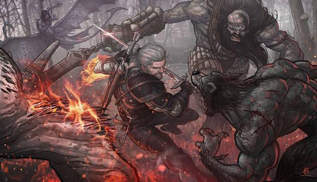
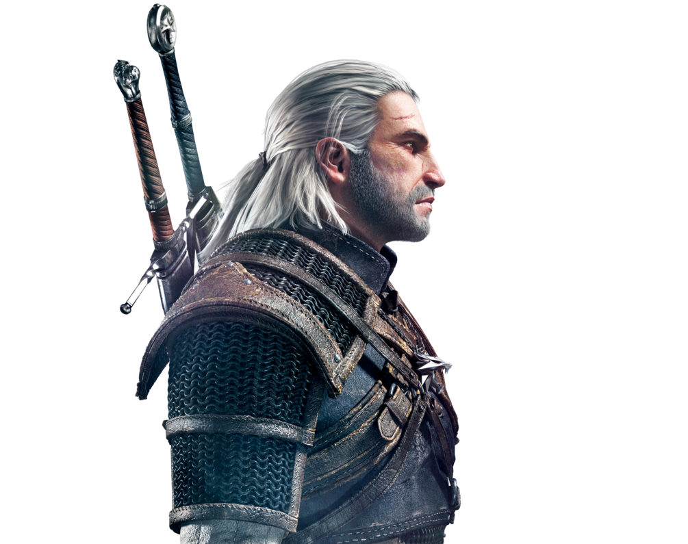

La saga de Geralt de Rivia, aquella que ha dado como resultado el fenómeno de The Witcher, es una de las más laureadas, leídas y exitosas de todos los tiempos en el ámbito de la literatura fantástica. Con una trilogía de videojuegos de gran éxito y una adaptación a imagen real con Henry Cavill triunfando en Netflix
Andrzej Sapkowski, con una pluma prodigiosa, dio vida al Continente, un lugar de fantasía en el que los monstruos no son los únicos peligros ni las amenazas más claras.
🔘 Orden de lectura de los libros de The Witcher
🔘 Orden recomendado de lectura según la cronología
El orden de lectura de la saga de The Witcher es objeto de debate constante. Las novelas, relatos y cuentos de Sapkowski se han ido publicando a lo largo de más de dos décadas, y poseen un orden bastante dispar. Si bien está editados en nueve tomos, y tienen una cierta coherencia interna, Sapkowski jamás concibió su trabajo como una saga. El escritor polaco simplemente arrancó a escribir las aventuras de un Brujo, un cazador de monstruos en un mundo de fantasía oscuro y brutal conocido como el Continente, dejando caer que su única ambición no fue otra que la de dejar que sus personajes cobraran vida a través de distintas aventuras y misiones que, a la postre, tendrían relación y vínculos entre ellas.
Se suele decir que la saga de Geralt de Rivia es fruto de la improvisación y del trabajo un tanto caótico de Sapkowski, algo que no es del todo cierto. Simplemente nunca se tuvo un plan fijado en mente ni su creador quiso construir una férrea cronología a la que seguir fielmente. Debido a esta falta de previsión, Sapkowski se vio ajustando su propia creación con precuelas y nuevas colecciones de relatos que acabarían hilvanando, conectando y enriqueciendo eventos e historias previas.
The Witcher, del polaco Wiedźmin (El brujo), es un videojuego de rol para PC desarrollado por CD Projekt RED STUDIO y distribuido por CD Projekt en Polonia y Atari en el resto del mundo. El videojuego está basado en la saga de libros del mismo nombre escritos por el autor polaco Andrzej Sapkowski. Este videojuego utiliza el motor aurora de la compañía BioWare.Fue lanzado en Europa y Norteamérica en octubre de 2007. Una versión para consola que utilizaría un motor de juego y sistema de combate totalmente nuevo, titulada The Witcher: Rise of the White Wolf iba a ser lanzada durante el otoño del 2009, pero fue suspendida por problemas de pago con los desarrolladores de la compañía francesa Widescreen Games.The Witcher tiene lugar en un mundo fantástico medieval y relata la historia de Geralt de Rivia, uno de los pocos brujos restantes (cazadores de monstruos a sueldo, quienes cuentan con poderes sobrenaturales).
El juego cuenta la historia de Geralt de Rivia, quien en la introducción del juego fue encargado de curar a la hija del Rey Foltest, quien tenía una maldición que la transformaba en un monstruo feroz, Geralt la cura satisfactoriamente, dando la visión al jugador de lo que en adelante sería el trabajo de brujo. Misteriosamente los años pasan, terminando con Geralt siendo transportado hacia la fortaleza de brujos Kaer Morhen por otros compañeros brujos, quienes lo habían encontrado inconsciente en el campo. Geralt no recuerda nada acerca de su vida antes de volver a Kaer Morhen.
El prólogo comienza cuando Geralt es encontrado por sus compañeros brujos. Geralt de Rivia es llevado a Kaer Morhen, la base de los brujos, donde conoce a una hechicera llamada Triss Merigold. La fortaleza es atacada por un grupo de bandidos llamados la Salamandra, liderados por un criminal conocido como el Profesor, un mago llamado Savolla, quien controla gran monstruo parecido a una mantis, y otro mago llamado Azar Javed. Los brujos y la hechicera logran matar al monstruo y a Savolla, pero el Profesor y Azar se teletransportan escapándose con los mutágenos que sirven para alterar genéticamente a los brujos. Después de curar a Triss de las heridas que recibió durante la pelea con Azar Javed y de acostarse con ella, Geralt y los demás brujos se van de Kaer Morhen en distintas direcciones para encontrar información sobre la Salamandra. Geralt se va al sur hacia Wyzima, capital de Temeria, y donde el Rey Foltest gobierna
The Witcher es una serie de televisión web estadounidense de drama y fantasía oscura creada por Lauren Schmidt Hissrich para Netflix. Se basa en la Saga de Geralt de Rivia del escritor polaco Andrzej Sapkowski. Ubicada en un mundo medieval en una masa de tierra conocida como "el Continente", The Witcher explora la leyenda de Geralt de Rivia y la princesa Ciri, que están unidos el uno al otro por el destino. Está protagonizada por Henry Cavill, Freya Allan y Anya Chalotra. La primera temporada, que se estrenó el 20 de diciembre de 2019, se basó en "El último deseo y La espada del destino", que son una colección de historias cortas que preceden a la saga principal de The Witcher. La primera temporada explora eventos que dieron forma a los tres personajes principales en distintas líneas de tiempo, antes de que finalmente se fusionen en una sola. El 13 de noviembre de 2019, la serie se renovó para una segunda temporada, la cual se estreno para el 17 de diciembre de 2021.
En septiembre de 2018, Netflix anunció que Henry Cavill interpretaría a Geralt de Rivia. En octubre de 2018, Freya Allan y Anya Chalotra fueron elegidas como princesa Cirilla y Yennefer de Vengerberg respectivamente, mientras que Jodhi May, Björn Hlynur Haraldsson, Adam Levy, MyAnna Buring, Mimi Ndiweni y Therica Wilson-Read también se unieron.Ese mismo mes se anunciaron más cástines, incluidos Eamon Farren, Joey Batey, Lars Mikkelsen, Royce Pierreson, Maciej Musiał, Wilson Radjou-Pujalte y Anna Shaffer.